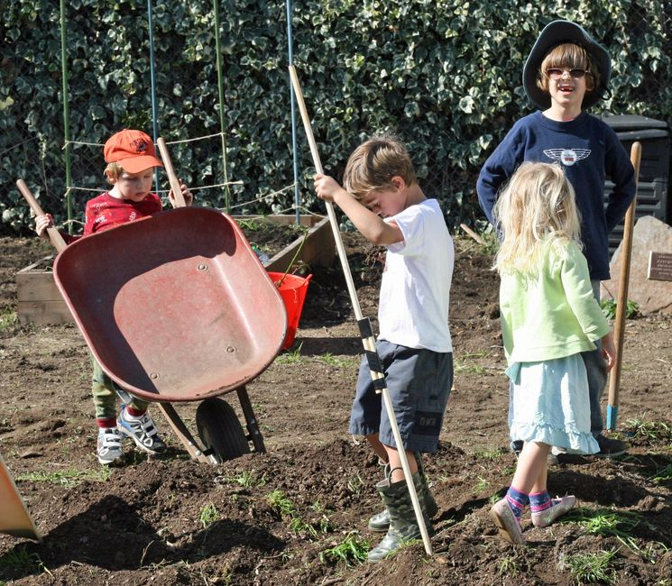

I grew up in rural and suburban Southeastern Wisconsin with a few animals and a lot of books. I went to high school in Laguna Beach, and graduated college and graduate school in San Francisco. I am married with two sons, one of whom is adopted. I was a project coordinator and project manager before kids/grad school working with architects, designers, and construction teams on large and small projects to build office space for highly collaborative teams at Genentech and Intel.
I've been a volunteer in Sunnyvale School District since 2005. I became inspired to become a teacher as I worked with innovative, caring teachers and professionals to differentiate for my older son with special needs when he entered school so that he could be included in a mainstream classroom. I spent thousands of hours creating a school garden and living classroom, as well as volunteering as room parent, FAME docent, and helper at community events. In 2008-09 a battle with breast cancer reinforced my sense of the importance of valuing the beauty in life, honoring and supporting the magic of childhood, and acknowledging and cultivating good will in our community. I was recognized twice for my pioneering, innovation, and leadership creating outdoor hands-on learning programs for all students.
I became a teacher and taught for four years at Fairwood Explorer School in Sunnyvale School District. My practice as an educator and volunteer has a lens of multiple intelligences, cultivating creativity, helping students form personal goals, and fostering a sense of belonging for all children.
After teaching in 2nd and 3rd grade, I took one year off (which became two) to support the needs of my oldest son who was struggling with bullying at his High School. Simultaneously, I volunteer taught AVID-Excel (Advancement Via Individual Determination - for English Language Learners) and literacy in EL-1 (newcomers) at the middle school. I also worked with several teachers at elementary school sites to teach and model social emotional curriculum (Positive Discipline, Leader in Me), project based learning, and inquiry based learning.
I am a lifelong learner and excited about education and the well-being of all children. If elected, I will collaborate with the community of parents, teachers, and the administration to provide policies, vision, and direction in our district.
